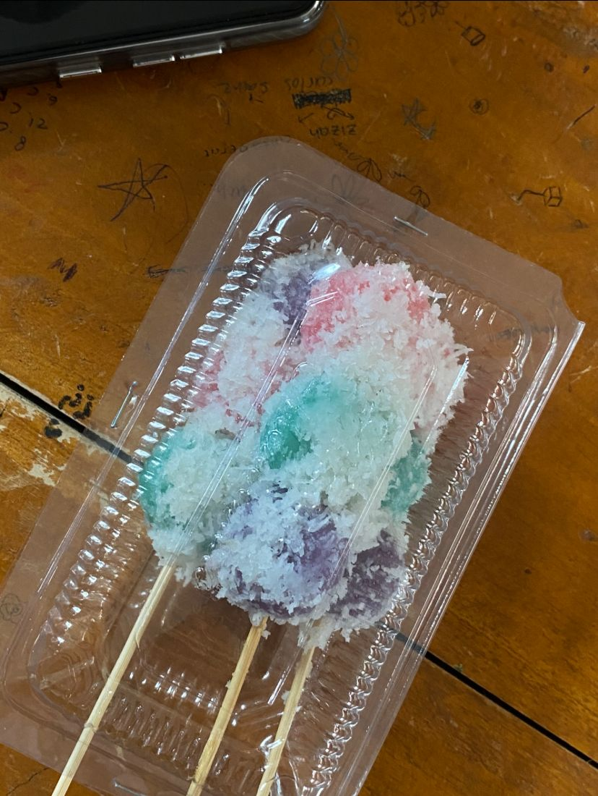

ONGOL-ONGOL

Sejarah Ongol-Ongol
Ongol-ongol adalah makanan tradisional Indonesia yang berasal dari Jawa Barat. Makanan ini terbuat dari tepung sagu yang dicampur dengan air kelapa dan gula merah, kemudian dikukus hingga teksturnya kenyal dan kenikmatannya khas.
Ongol-ongol sering kali disajikan sebagai makanan penutup atau camilan yang disukai banyak orang, terutama di daerah pedesaan. Makanan ini juga dikenal dengan nama lain di beberapa daerah, seperti "kue ongol" atau "kue sagu."
Cara Pembuatan Ongol-Ongol
Proses pembuatan ongol-ongol melibatkan beberapa tahapan penting, yaitu:
- Menyiapkan bahan utama seperti tepung sagu, kelapa parut, dan gula merah.
- Melarutkan gula merah dalam air hingga menjadi sirup kental.
- Campurkan tepung sagu dengan air kelapa dan sirup gula merah, lalu aduk hingga tercampur rata.
- Masukkan campuran ke dalam cetakan atau wadah yang telah diolesi minyak atau daun pisang.
- Kukus campuran adonan selama sekitar 30-40 menit hingga matang dan teksturnya kenyal.
- Setelah matang, ongol-ongol siap disajikan.
Cara Membuat Ongol-Ongol Sendiri di Rumah
Berikut adalah resep dan cara membuat ongol-ongol di rumah:
Bahan-bahan:
- 250 gram tepung sagu
- 200 gram kelapa parut kasar
- 200 gram gula merah, serut halus
- 500 ml air kelapa muda
- 1/2 sendok teh air daun pandan suji (opsional, untuk aroma)
- Daun pisang atau cetakan untuk membungkus
Cara Membuat:
- Lelehkan gula merah dengan sedikit air hingga menjadi sirup kental. Sisihkan.
- Campurkan tepung sagu dengan air kelapa dan sirup gula merah. Aduk rata hingga tidak ada gumpalan.
- Tambahkan air daun pandan untuk aroma khas (jika menggunakan), lalu aduk rata.
- Siapkan cetakan atau daun pisang untuk membungkus, olesi sedikit minyak agar tidak lengket.
- Tuangkan adonan ke dalam cetakan atau daun pisang, rapatkan dan kukus selama sekitar 30-40 menit hingga matang dan kenyal.
- Setelah matang, angkat ongol-ongol dan biarkan sedikit dingin sebelum dipotong.
- Sajikan ongol-ongol dengan taburan kelapa parut kasar di atasnya.